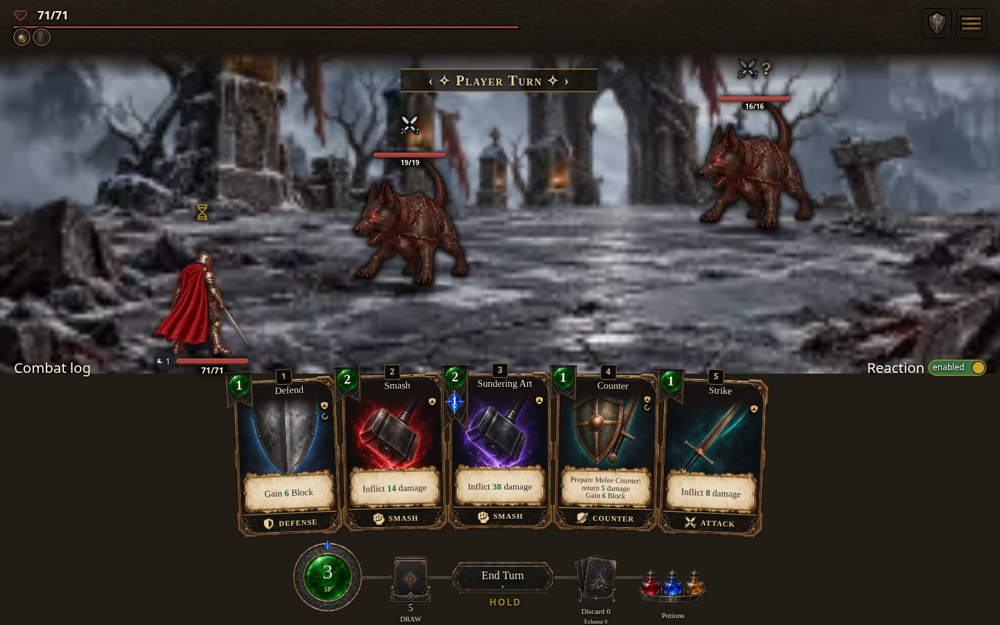
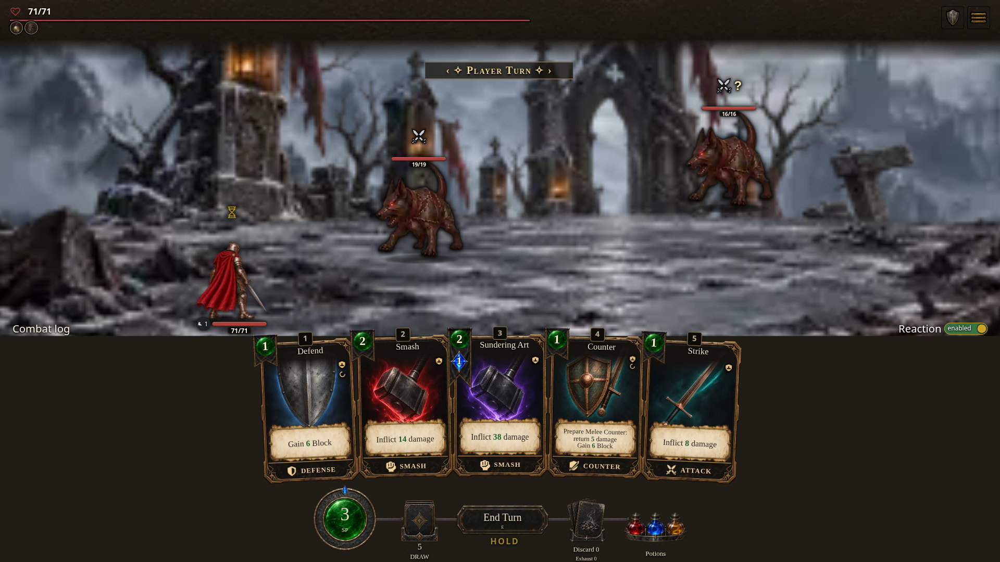

Revised original layout · visual preview
Existing game art, original header/footer arrangement, fixed Combat log and Reaction controls. Preview only: no gameplay changes or saved-state changes.
Four rows: enemy back A, enemy front B, extra combatant row C, player D. Row C is planned usable by configuration, disabled in core and enabled in the current module; it stays empty in this core fixture. Player defaults to the leftmost D cell.
Open the responsive visual prototype · View updated four-row wireframe

